Sistema de Mesa de Ayuda de TI (Service Desk)
Prototipo vertical de alta fidelidad basado en las mejores prácticas de ITIL v4, arquitectura de software bajo el modelo de vistas 4+1 de Kruchten y patrones de diseño orientados a objetos GoF.
Equipo de Proyecto - Grupo 5
Granda Salazar, Rodrigo C.
24200017
Quezada Pairazaman, Sebastian
24200030
Quispe Arango, Juan Pablo
24200121
Saldaña Sánchez, Luis Mario
24200038
Treviño Alvarado, Milagros Sofia
24200219
Oficina General de Tecnologías de la Información (OGTI)
Gobernanza digital y provisión de soporte técnico continuo a más de 1,200 servidores públicos en sedes centrales y desconcentradas.
Mesa de Ayuda (Help Desk)
Punto único de contacto encargado de la recepción institucional, triaje inicial, registro formal, diagnóstico preliminar y resolución inmediata de incidencias de baja complejidad.
Infraestructura y Soporte de Campo
Equipo técnico especializado en intervención in situ y correctivos avanzados sobre equipamiento físico, redes locales y puestos de trabajo de funcionarios.
Arquitectura y Seguridad Digital
Ingenieros de software nuclear, administradores de bases de datos (DBA), seguridad perimetral y enlace con proveedores tecnológicos externos.
Chain of Responsibility), garantizando delegación jerárquica desatendida.
Diagnóstico Operativo: El Modelo Artesanal Actual
La OGTI operaba mediante hojas de cálculo compartidas, hilos de correo y mensajería informal, generando cuatro deficiencias operativas graves bajo el marco ITIL v4.
Ausencia de Cálculo Formal y Monitoreo de SLAs
Inexistencia de un mecanismo automatizado que determine la fecha y hora límite exacta (dueAt) según la prioridad de la incidencia. La jefatura carece de visibilidad sobre los plazos contractuales que están por expirar.
Escalamiento Discrecional y Cuellos de Botella
La derivación de tickets entre Nivel 1, Nivel 2 y Nivel 3 se ejecuta manualmente a criterio subjetivo del analista en turno. Esto genera acumulación de incidentes no resueltos en N1 o saturación innecesaria en N3 por mala categorización.
Pérdida de Trazabilidad e Infracción de SLAs
Incidentes críticos que paralizan servicios gubernamentales (SIGA, caídas de enlace troncal) superan los tiempos tolerables sin emitir alertas tempranas de riesgo ni registrar auditorías inmutables de quién intervino en cada etapa.
Falta de Desacoplamiento por Tipos de Incidencia
Las diferentes categorías (Hardware, Software, Redes, Accesos) poseen naturalezas operativas, prioridades base y protocolos distintos. Sin embargo, se procesaban con una plantilla plana genérica sin extensibilidad ni especialización.
Marco de Objetivos, Alcance Vertical y Restricciones
Diseñar e implementar un prototipo vertical de un Sistema de Mesa de Ayuda de TI (Service Desk) bajo las buenas prácticas de ITIL v4, que automatice la recepción, cálculo y monitoreo de SLAs, así como el escalamiento jerárquico de incidentes mediante patrones de diseño de software.
- 1 Formalizar requisitos bajo el estándar internacional ISO/IEC 25010:2011.
- 2 Diseñar la arquitectura bajo el modelo de vistas 4+1 de Kruchten y artefactos UML 2.5.1 aplicando Factory Method, Chain of Responsibility y Observer.
- 3 Implementar el prototipo vertical en Node.js / TypeScript cubriendo de punta a punta el CU-02.
- 4 Validar la solución mediante pruebas unitarias de Caja Blanca (cobertura de ramas ≥ 90%) y funcionales de Caja Negra.
- • Flujo E2E crítico del CU-02
- • Capas REST, Service, Domain y Repo
- • 3 Patrones GoF obligatorios
- • Pruebas T-1s, T, T+1s en fronteras
- • Autenticación compleja / SSO
- • Dashboards de BI extensos
- • Frontends cosméticos multi-vista
- • Change / Problem Management
Requisitos Funcionales (MoSCoW) y No Funcionales (ISO 25010)
Registro de Incidencia
Captura título, descripción, categoría (Hardware, Software, Redes, Accesos), impacto y urgencia, generando un ID único.
Inicialización Polimórfica
Inicializa la entidad de ticket polimórficamente según categoría, calculando la prioridad ITIL y marca temporal exacta de vencimiento (dueAt).
Verificación Temporal de SLA
Provee verificación periódica o bajo demanda que evalúa si un ticket ha sobrepasado su fecha/hora límite contractual.
Disparo de Evento de Alerta
Al detectar expiración de SLA, dispara un evento desacoplado hacia los observadores suscritos (consola y notificador).
Cadena de Escalamiento
Delega el ticket vencido secuencialmente (N1 → N2 → N3), actualizando estado a ESCALADO y reasignando el nivel técnico.
Consulta y Trazabilidad
Permite consultar un ticket por ID, exponiendo nivel asignado, historial inmutable de escalamientos y marcas temporales.
| Código | Característica ISO 25010 | Descripción Técnica | Métrica Cuantitativa | Método de Verificación |
|---|---|---|---|---|
| RNF-01 | Rendimiento / Comportamiento temporal | Tiempo de respuesta óptimo en POST /tickets bajo carga institucional. |
P95 ≤ 200 ms (50 req/s) | Prueba de carga automatizada |
| RNF-02 | Fiabilidad / Disponibilidad | Operación continua durante jornada laboral (08:00 a 18:00 hrs). | Uptime ≥ 99.5% | MTTR ≤ 15 min | Monitoreo de uptime y logs |
| RNF-03 | Mantenibilidad / Modularidad | Capas limpias y patrones GoF para incorporar categorías sin modificar clientes. | Principio OCP | Cero dependencias circulares | Análisis estático de dependencias |
| RNF-04 | Mantenibilidad / Testeabilidad | Lógica nuclear validada con pruebas unitarias automatizadas. | Branch coverage ≥ 90% | Líneas ≥ 85% | Reporte automatizado Jest / Vitest |
| RNF-05 | Seguridad / Integridad | Validación estricta de payloads REST, rechazando esquemas malformados. | 100% peticiones inválidas → HTTP 400 | Pruebas de caja negra con valores límite |
Proceso Operativo de Gestión y Escalamiento de Incidencias (BPMN 2.0)
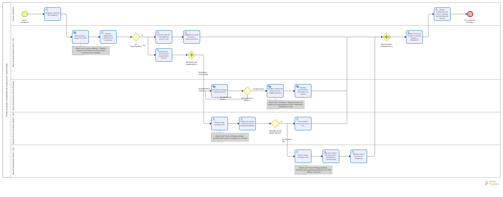
Lanes y Fases del Flujo
- 1. Solicitud: Servidor público reporta falla vía canal institucional.
-
2. Triaje y Cálculo (N1):
Clasificación y cómputo de SLA contractual (
dueAt). - 3. Diagnóstico Preliminar: Resolución inmediata o retención en bandeja de Nivel 1.
- 4. Monitoreo Concurrente: Motor en paralelo evalúa tiempo límite y genera alertas.
- 5. Cadena de Escalamiento: Transferencia desatendida a N2 o N3 si expira el SLA.
- 6. Cierre y Conformidad: Registro de causa raíz y acuse del solicitante (48h).
Modelo de Casos de Uso y Ficha Técnica del Vertical Slice (CU-02)
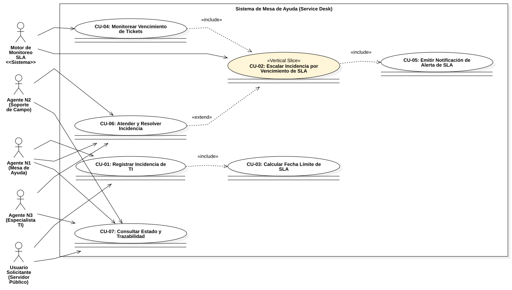
CU-02: Registrar Incidencia y Escalarla al Vencer SLA
POST /tickets. Controlador valida esquema con CreateTicketDTO y delega a TicketService.TicketFactory computa prioridad ITIL y fecha contractual dueAt. Se persiste con estado ABIERTO y nivel NIVEL_1. Retorna HTTP 201 Created.SlaSchedulerWorker inspecciona ticket: detecta currentTime > dueAt. Publica SlaBreachEvent vía SlaBreachNotifier a los observadores en paralelo.SupportLevelHandler. L1SupportHandler delega a L2SupportHandler, quien actualiza estado a ESCALADO, nivel a NIVEL_2 y registra motivo SLA_BREACH_TIMEOUT inmutable. Persiste y finaliza.RESUELTO. El worker ignora el ticket por estar inactivo.
L3SupportHandler (NIVEL_3).
Modelo Conceptual de Dominio (Directrices de Larman)
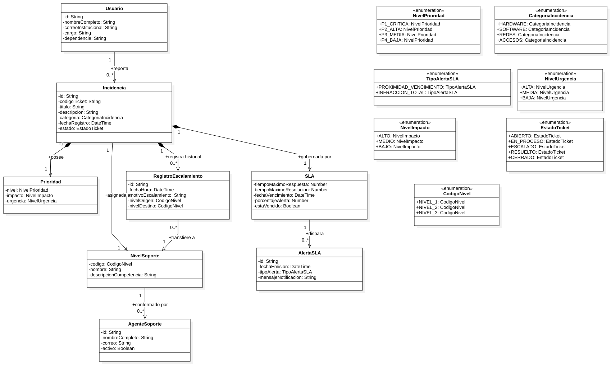
Diccionario de Clases Conceptuales
Entidad central con ciclo de vida (ABIERTO, EN_PROCESO, ESCALADO, RESUELTO, CERRADO) y categorías especializadas.
Parámetros contractuales con marca dueAt calculada y umbral de alerta.
Resultado del cruce bidimensional ITIL v4 entre Impacto y Urgencia (P1 a P4).
Escalafón operativo con competencias asignadas (NIVEL_1, NIVEL_2, NIVEL_3).
Registro inmutable de auditoría con marca temporal, motivo y nivel destino.
Evento de notificación emitido ante proximidad o infracción del tiempo contractual.
El Modelo de Vistas 4+1 de Philippe Kruchten
Estructurado en observancia de la norma ISO/IEC/IEEE 42010:2011 para abordar las inquietudes de los diversos interesados (stakeholders).
Vista Lógica
Logical View
Descompone el microservicio en 4 capas limpias desacopladas e implementa los 3 patrones GoF obligatorios.
Vista de Procesos
Process View
Aborda concurrencia, sincronización de flujos y el Worker desacoplado de SLAs frente al Event Loop de Node.js.
Vista de Desarrollo
Development View
Organización de paquetes (src/presentation, application, domain, infrastructure) y Regla DIP.
Vista Física / Despliegue
Physical View
Topología de ejecución: Cliente HTTP sobre TLS, Proceso Node.js v24 LTS en Puerto 3000 y repositorio indexado.
El CU-02 (Escalamiento de Incidencia por Vencimiento de SLA) valida y conecta armónicamente las 4 vistas arquitectónicas.
Vista Lógica: Capas Limpias y Patrones GoF
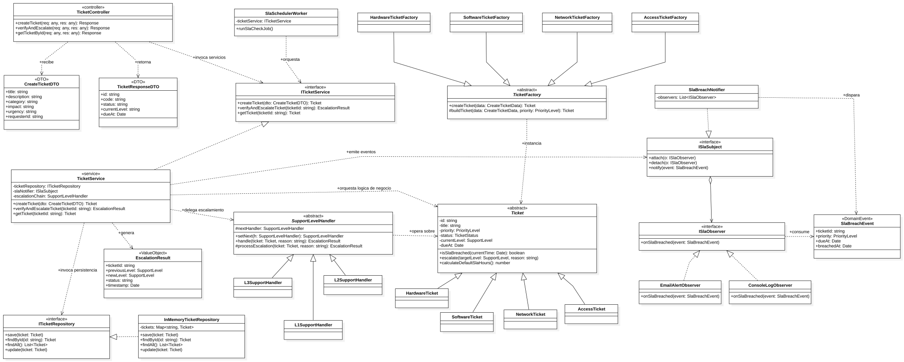
Descomposición en 4 Capas
Controladores REST (TicketController) y validación de entrada con DTOs.
Servicio coordinador (TicketService) orquestador de casos de uso sin acoplamiento técnico.
Entidades, TicketFactory, SupportLevelHandler, SlaBreachNotifier e interfaz ITicketRepository.
Adaptadores concretos: InMemoryTicketRepository, ConsoleLogObserver y SlaSchedulerWorker.
Vista de Procesos: Concurrencia y Flujo Asíncrono de SLAs
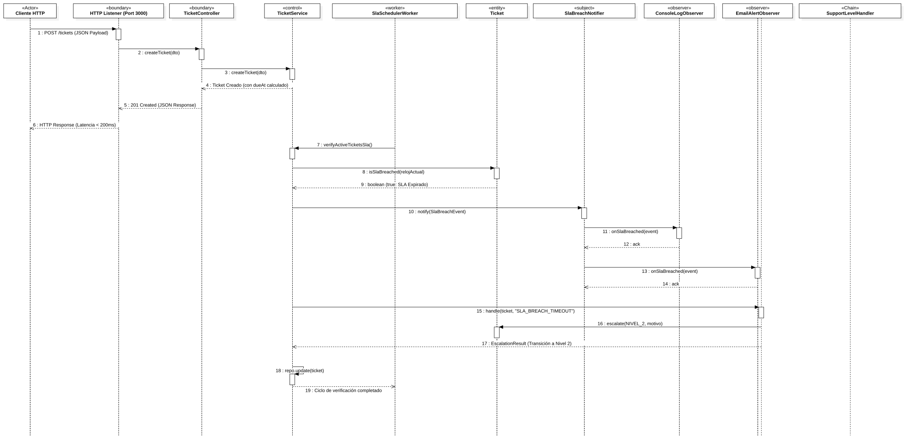
Concurrencia en Node.js
Atiende peticiones HTTP de forma síncrona/no bloqueante en < 20 ms para la creación de tickets.
Temporizador desacoplado que evalúa en segundo plano los tickets activos y despacha eventos ante infracciones sin bloquear la API REST.
Notificación paralela a canales registrados, aislando latencias de red del hilo de ejecución transaccional.
Vista de Desarrollo: Estructura Modular y Regla de Dependencia
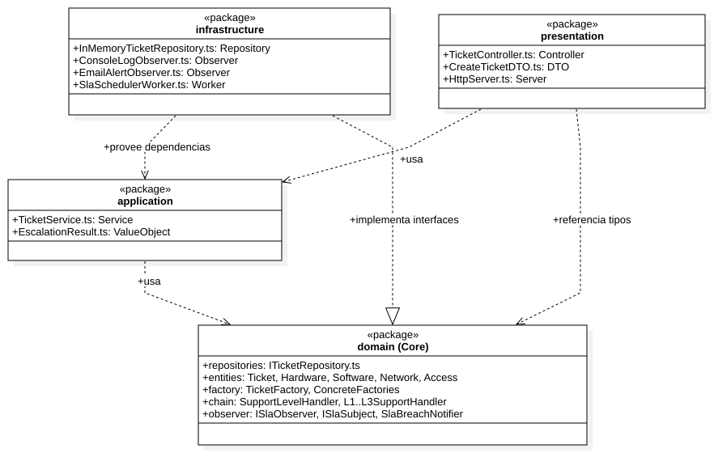
Organización de Paquetes
Vista Física: Topología de Despliegue en Ejecución
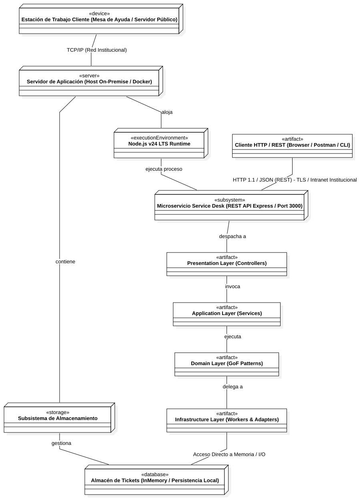
Nodos de Ejecución
Navegador / Postman / Consola emitiendo peticiones HTTP/JSON sobre TLS hacia la API.
Proceso Node.js v24 LTS en el puerto TCP 3000 ejecutando la API REST y el worker temporal en el mismo espacio seguro.
Acceso desacoplado a través de ITicketRepository, resuelto en memoria concurrente (InMemoryTicketRepository).
Escenario Integrador CU-02 y Tácticas Arquitectónicas (SEI / ADD)
Justificación de decisiones según la metodología de Bass, Clements y Kazman (Software Engineering Institute).
P95 ≤ 200 ms
Optimización de cómputo algorítmico y estructuras en memoria para alta concurrencia.
dueAt al instanciar el ticket, permitiendo verificación en tiempo constante O(1) (now > dueAt).
Map<string, Ticket> con costo de acceso, lectura y actualización en tiempo constante O(1).
Uptime ≥ 99.5%
Tolerancia a fallos en integración telemática y continuidad operativa.
Modularidad & Testeabilidad
Extensibilidad sin tocar clientes y facilidad de pruebas automatizadas.
Diagrama de Clases de Diseño (UML 2.5.1) - Microservicio
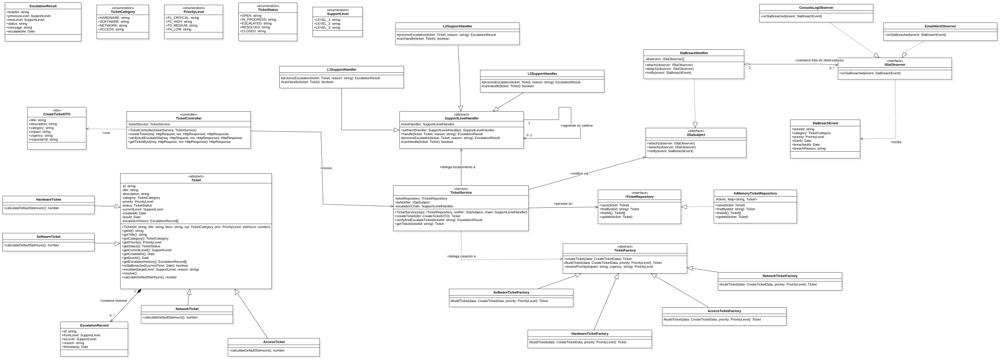
Patrones GoF Implementados
Clase base abstracta Ticket y factorías concretas por categoría (HardwareTicketFactory, etc.) que calculan el SLA exacto.
Manejador base SupportLevelHandler con enlace nextHandler y eslabones concretos: L1SupportHandler, L2SupportHandler y L3SupportHandler.
Interfaz ISlaSubject en SlaBreachNotifier que notifica concurrentemente a ConsoleLogObserver y observadores suscritos.
Interfaz desacoplada ITicketRepository e implementación en memoria InMemoryTicketRepository.
Diagrama de Secuencia - Caso de Uso Crítico (CU-02)
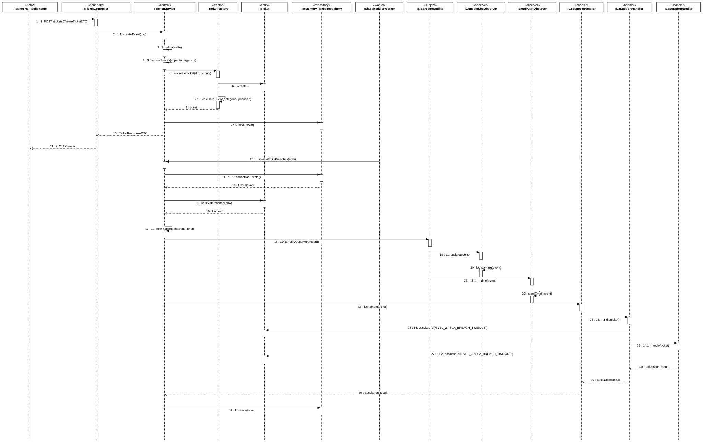
Fragmentos Combinados UML 2.5.1
Diagrama de Estados: Actividades Internas y Matriz de Transiciones
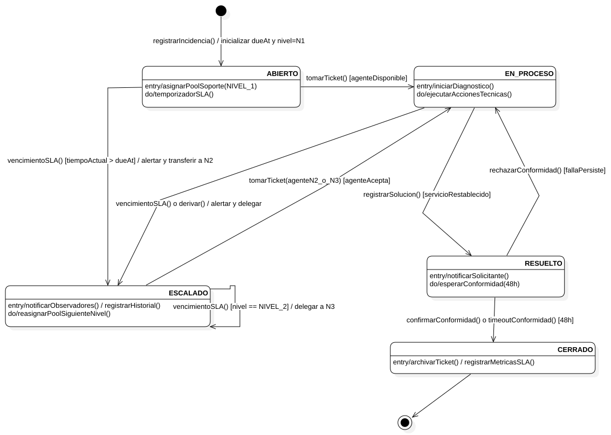
| Transición | Evento [Guarda] / Efecto | Justificación Técnica |
|---|---|---|
| ● → ABIERTO | registrarIncidencia() / init dueAt | Cómputo inicial de prioridad ITIL y hora límite dueAt. |
| ABIERTO → EN_PROCESO | tomarTicket() [disponible] | Operador de Nivel 1 asume atención del requerimiento. |
| EN_PROCESO → ESCALADO | vencimientoSLA() [now > dueAt] / alertar | Vertical Slice: Expiró SLA-T; se transfiere ticket a Nivel 2. |
| ESCALADO → ESCALADO | vencimientoSLA() [now > dueAt && N2] / a N3 | Escalamiento recursivo: Incidencia en N2 vuelve a vencer y pasa a N3. |
| EN_PROCESO → RESUELTO | registrarSolucion() [restablecido] | Especialista registra causa raíz y restablece servicio. |
| RESUELTO → EN_PROCESO | rechazarConformidad() [persiste] | Reapertura dentro de 48h si el solicitante reporta falla. |
| RESUELTO → CERRADO | confirmar() o timeoutConformidad(48h) | Cierre formal o cierre administrativo automático por inacción. |
Diagrama de Componentes: Acoplamiento, Lollipops & Sockets
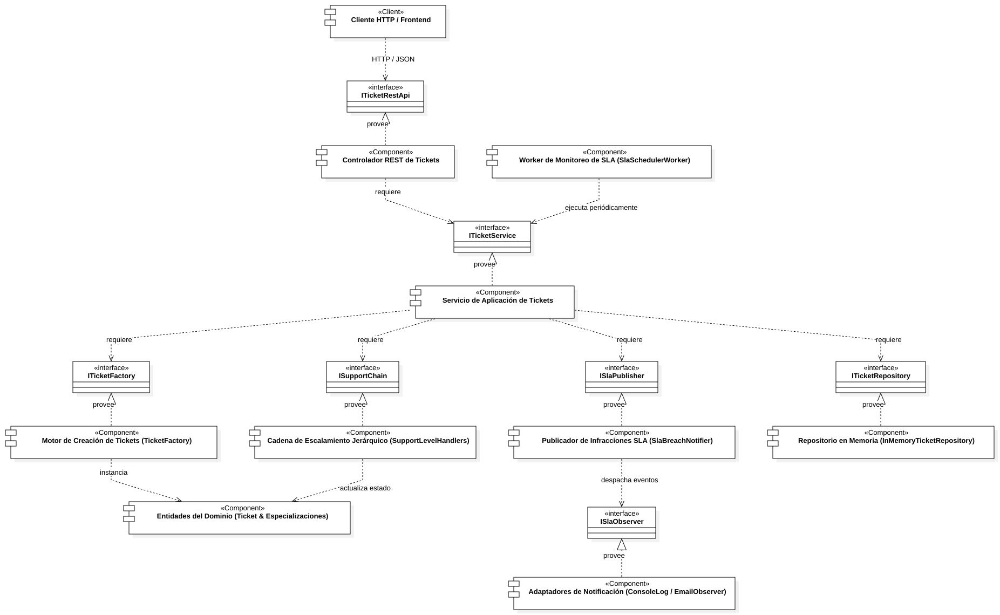
Principios de Interconexión
Las entidades y patrones de negocio operan puros: cero dependencias a librerías de terceros, bases de datos o protocolos HTTP.
TicketService provee ITicketService al controlador y consume interfaces requeridas del dominio y de repositorio.
Se puede migrar de InMemoryTicketRepository hacia PostgreSQL / Prisma implementando ITicketRepository sin modificar una sola línea de código en la capa de aplicación ni en el dominio.
Conclusiones y Recomendaciones Técnicas
Validación de objetivos frente a los estándares de ingeniería de software, arquitectura limpia y gobernanza ITIL v4.
Erradicación del Escalamiento Discrecional
Se sustituyó exitosamente el modelo artesanal previo mediante el cómputo determinístico anticipado de dueAt y la matriz bidimensional de criticidad (P1 a P4). Esto elimina la discrecionalidad humana en los traspasos y asegura el cumplimiento estricto de SLAs para más de 1,200 servidores públicos.
Aislamiento Absoluto del Núcleo de Dominio
La aplicación de los principios de Clean Architecture y la Inversión de Dependencias (DIP) aisló las reglas del negocio de cualquier librería, base de datos o protocolo HTTP. La relación entre interfaces provistas y requeridas (Lollipop & Socket) garantiza la sustitución de la persistencia sin tocar la lógica de negocio.
Solución Modular a Deficiencias Operativas
La orquestación de Factory Method (polimorfismo por categoría), Chain of Responsibility (delegación secuencial desacoplada N1→N2→N3) y Observer (alertas concurrentes con degradación elegante) solucionó integralmente los cuatro problemas identificados en la OGTI.
Validación Cuantitativa y Testeabilidad
El prototipo vertical demostró tiempos de respuesta P95 ≤ 200 ms bajo carga concurrente, disponibilidad proyectada ≥ 99.5% y una cobertura de pruebas unitarias de caja blanca de ramas (branch coverage) ≥ 90% en la cadena de escalamiento.
UNIVERSIDAD NACIONAL MAYOR DE SAN MARCOS
Facultad de Ingeniería de Sistemas e Informática • Decana de América
¡Muchas Gracias por su Atención!
Quedamos a su entera disposición para dar inicio a la Ronda de Preguntas y Respuestas (Q&A) sobre el diseño arquitectónico, decisiones técnicas y prototipo.
Rodrigo Granda Salazar (24200017) • Sebastian Quezada Pairazaman (2420030) • Juan Pablo Quispe Arango (24200121) • Luis Saldaña Sánchez (24200038) • Milagros Treviño Alvarado (24200219)